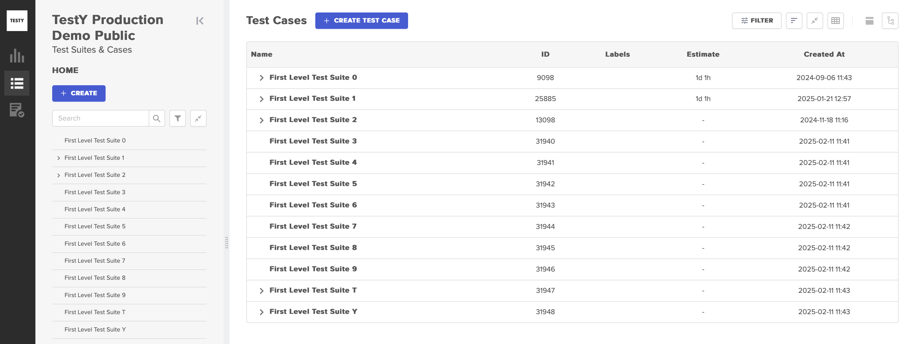
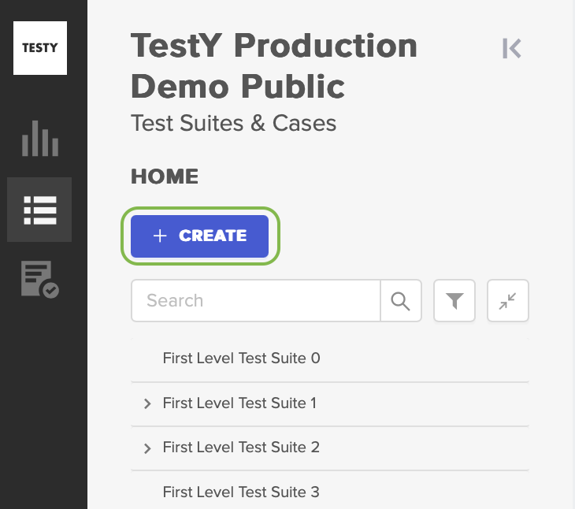
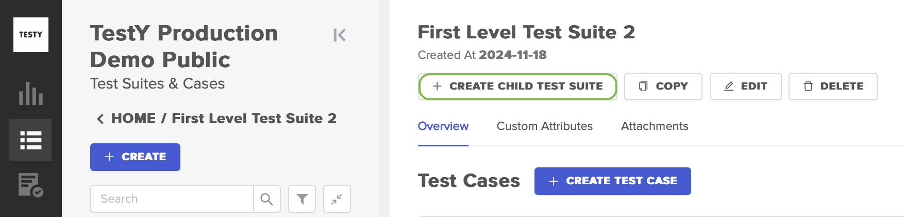
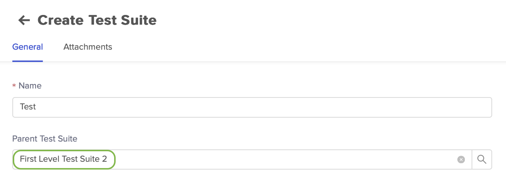

Тестовые наборы
В рамках системы TestY TMS тестовый набор представляет собой набор тест-кейсов, объединенный по какому-либо признаку для упорядоченного хранения: 
{kind=link}
Тестовый набор может быть создан как новый набор в корневой директории либо дочерним к другому тестовому набору.
Создание нового тестового набора
Нажмите CREATE в верхней части левой боковой панели: 
Заполните поля. Поле Name — единственный обязательный параметр для создания тестового набора. Поле Parent Suite должно оставаться пустым.
Нажмите CREATE в правом верхнем углу экрана.
{kind=link}
Создание дочернего тестового набора
Перейдите в один из тестовых наборов. На странице тестового набора нажмите CREATE CHILD TEST SUITE: 
Заполните поля. В Parent Suite автоматически выбран тестовый набор, в котором была открыта форма создания дочернего тестового набора:  При необходимости выберите другого родителя тестового набора, нажав .
Нажмите CREATE в правом верхнем углу экрана.
{kind=link}
{kind=link}
{kind=link}
В случае необходимости набор полей по умолчанию может быть расширен за счет создания пользовательских атрибутов.
К описанию можно добавить вложения, которые будут доступны на отдельной вкладке. Например, документация, описывающая общие принципы создания тест-кейсов в наборе:
{kind=link}
Доступно создание неограниченного количества уровней вложенности тестовых наборов:
{kind=link}
Навигация по тестовым наборам
Для навигации по тестовым наборам можно использовать боковую панель, расположенную в левой части экрана. Боковая панель масштабируется и сворачивается. Пользователю доступна фильтрация по имени тестового набора и сортировка. Пользователь может перейти на любой уровень тестовых наборов. При навигации в верхней части доступна навигационная цепочка, которая может использоваться для возврата на предыдущий уровень:
{kind=link}
Для навигации может использоваться древовидная структура тестового набора в правой части экрана: нажатие на название тестового набора делает выбранный тестовый набор корневым и выстраивает от него структуру:
Нажмите на иконку информации () напротив названия тестового набора, чтобы посмотреть всплывающую подсказку с количеством тест-кейсов в тестовом наборе и общим количеством тест-кейсов в его дочерних тестовых наборах:
{kind=link}
{kind=link}
Для создания тест-кейсов, копирования тестового набора и других действий можно использовать кнопки, расположенные в шапке тестового набора:
{kind=link}
Все действия также доступны пользователю в меню, открывающемся при нажатии правой кнопки мыши на название тестового набора в боковой панели:
{kind=link}
Действия, доступные для тестового набора:
Действие
Описание
Create child suite
Создание дочернего тестового набора.
При нажатии открывается страница создания тестового набора. По умолчанию родителем выбран тестовый набор, с которого осуществляется действие, но пользователь может выбрать другого родителя из наборов, созданных в проекте.
Copy
Копирование.
При нажатии открывается форма копирования тестового набора. Доступно копирование внутри и за рамки проекта. При копировании тестового набора, будут скопированы все тест-кейсы, расположенные в нем и в его дочерних наборах.
Edit
Изменение общей информации о наборе.
Delete
Удаление тестового набора и всех связанных с ним сущностей.
При удалении тестового набора будут удалены:
Тест-кейсы, которые находятся в наборе;
Дочерние тестовые наборы с тест-кейсами;
Тесты, связанные с тест-кейсами из наборов;
Тестовые результаты, добавленные к тест-кейсам из тестового набора.